السلسلة 67
السيارة (صنف B) · 40 سؤال. كل سؤال فيه الصورة والصوت. اختار الجواب (ولا جوج إلا كانو صحاح)، ورك على «تأكيد» باش تشوف واش صبتي.
- 40سؤال
- 32باش تنجح
- 1 – 4جواب واحد ولا أكثر
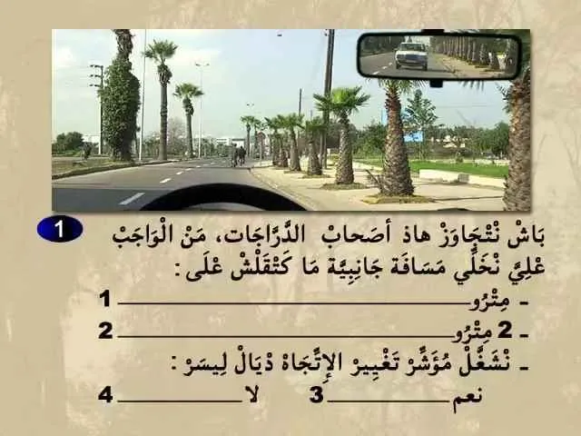
الكلافيي: 1–4 للجواب، Enter للتأكيد وللسؤال الجاي.
السلسلة 67 · النتيجة ديالك
0 / 40
السلسلة 67
السيارة (صنف B) · 40 سؤال، بالصوت، مع الجواب الصحيح والشرح.
السؤال 1
بيّن الجواب
الجواب الصحيح: 1 و 3
داخل التجمعات السكنية، خاصني نخلي مسافة ديال متر واحد على الأقل باش نتجاوز الدراجات، و خارج التجمعات السكنية نخلي متر ونص. و طبعا، خاصني نشعل اضواء سينيال ليسار حيت غادي نتجاوز.
السؤال 2
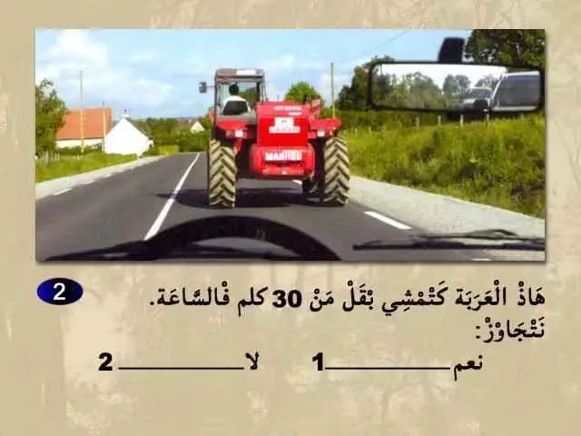
بيّن الجواب
الجواب الصحيح: 2
الخط مستمر يعني مايمكنش نتجاوز.
السؤال 3
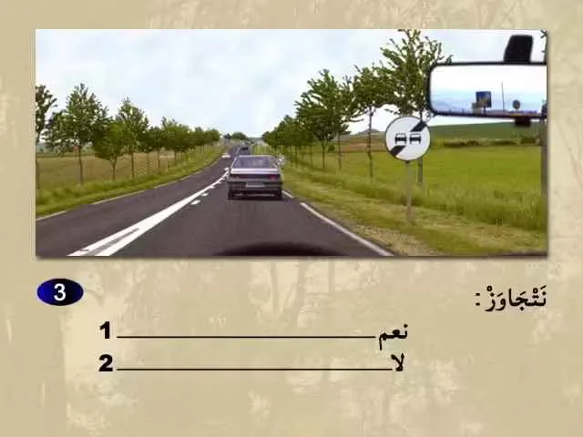
بيّن الجواب
الجواب الصحيح: 2
الإشارة الطّرقية العمودية كتعني نهاية منع التّجاوز، يعني منع التجاوز سالا و من بعد الإشارة نقدر نتجاوز. ولكن كاينة طوموبيل جاية من الجهة المعاكسة، يعني خاص نتسنا.
السؤال 4
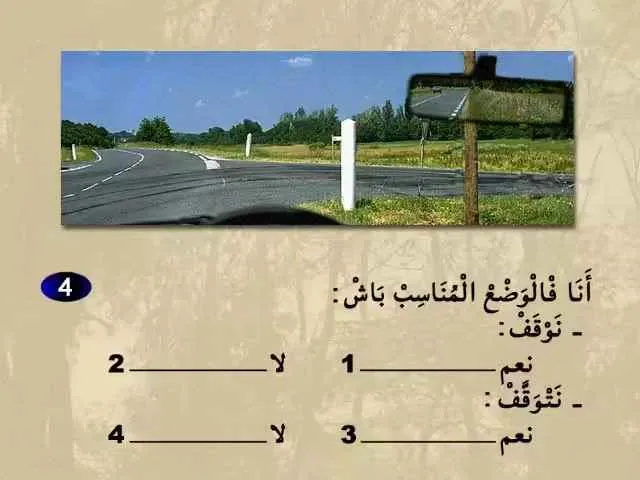
بيّن الجواب
الجواب الصحيح: 2 و 4
الإشارة كتشير لملتقى الطرق، وفي ملتقى الطرق ممنوع الوقوف والتوقّف.
السؤال 5
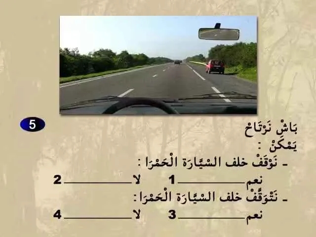
بيّن الجواب
الجواب الصحيح: 2 و 4
الصورة كتبيّن أنني فطريق سيّار، الخط متصل على اليسار وشريط التوقّف الإستعجالي على اليمين. فشريط التوقّف الإستعجالي ممنوع الوقوف إلا في حالة عطب أو ضرورة، مايمكنش نوقف خلف الطوموبيل الحمراء للراحة ولا التوقّف.
السؤال 6
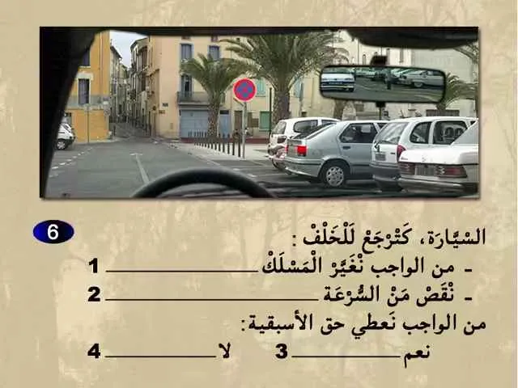
بيّن الجواب
الجواب الصحيح: 2 و 4
السيارة اللي كتراجع من الموقف ماعندهاش حق الأسبقية، الأسبقية عندي، خاص السائق ينتظر حتى ندوز، ننقص السرعة وندوز بلا ما نبدل المسلك.
السؤال 7
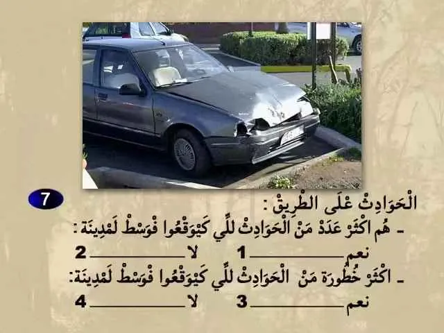
بيّن الجواب
الجواب الصحيح: 2 و 3
الحوادث فوسط المدينة كثر من اللي خارج المدينة، حيت فوسط المدينة السير مزدحم والحوادث قليلة الخطورة، ولكن خارج المدينة الحوادث خطيرة بسبب السرعة. الجواب الصحيح هو 2 و 3.
السؤال 8
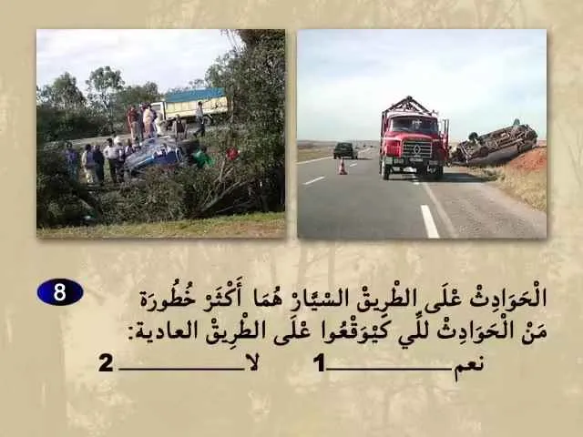
بيّن الجواب
الجواب الصحيح: 1
فطريق السيار الحوادث كثر خطورة من الطريق العادية، حيت السرعة القصوى هي 120 كلم/ساعة، والطريق الوطنية السرعة 100 كلم/ساعة.
السؤال 9
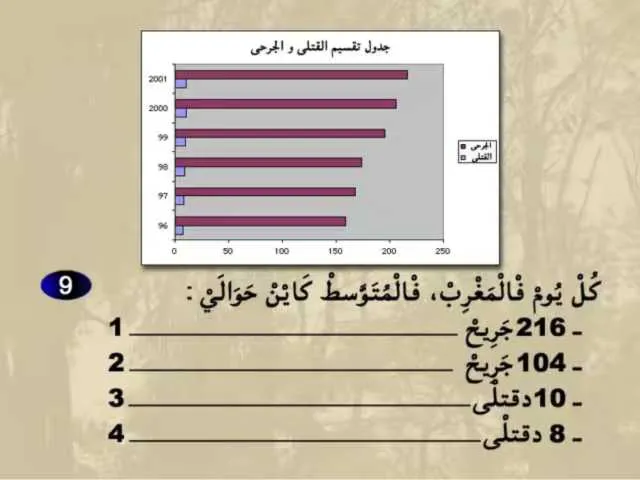
بيّن الجواب
الجواب الصحيح: 2
حسب المبيان، المتوسط ديال الجرحى هو 216 جريح كل نهار والمتوسط ديال القتلى هو 10 كل نهار.
السؤال 10
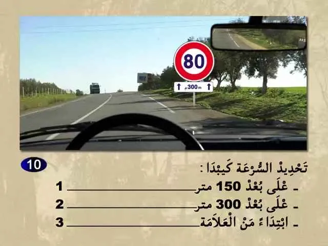
بيّن الجواب
الجواب الصحيح: 3
إشارات المنع كتطبق من عند العلامة، والإشارة التكميلية اللي تحت إشارة تحديد السرعة كتعني أن التحديد كيطبق على مسافة 300 متر.
السؤال 11
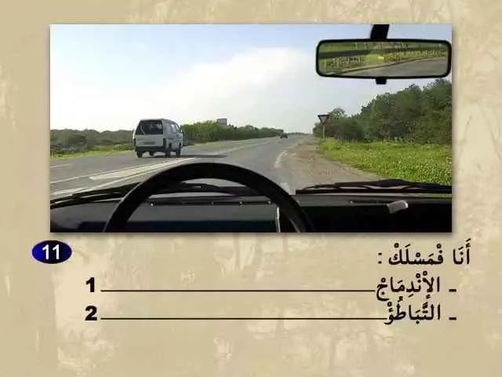
بيّن الجواب
الجواب الصحيح: 1
كاينة إشارة عمودية قدامي كتعني ماعنديش حق الأسبقية، حنا فمسلك الاندماج، خاصني نستعد نندمج فحركة السير. مسلك التباطئ هو المسلك اللي نخرج فيه من الطريق.
السؤال 12
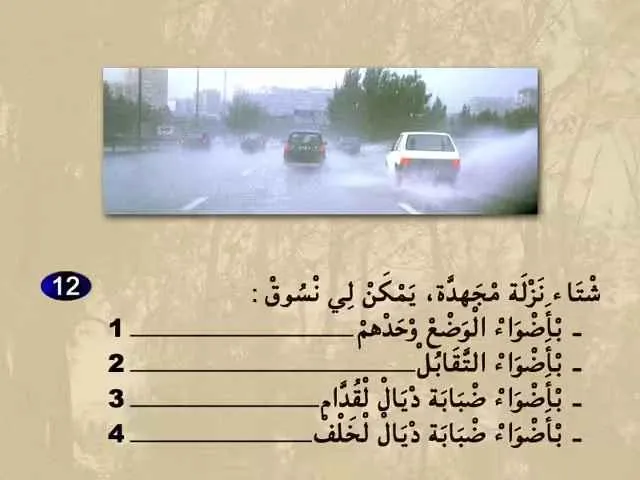
بيّن الجواب
الجواب الصحيح: 2 و 3
في المطر نقدر نستعمل أضواء التقابل وأضواء الضباب الأمامية، أضواء الوضع مايمكنش، أضواء الضباب الخلفية نستعملهم فحالة الضباب ماشي المطر.
السؤال 13
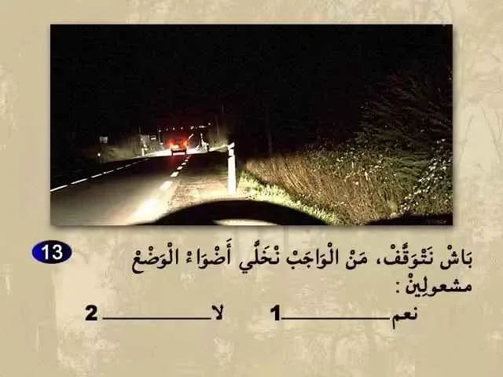
بيّن الجواب
الجواب الصحيح: 1
باش نوقف على جنب الطريق بالليل خاصني نشعل أضواء الوضع.
السؤال 14
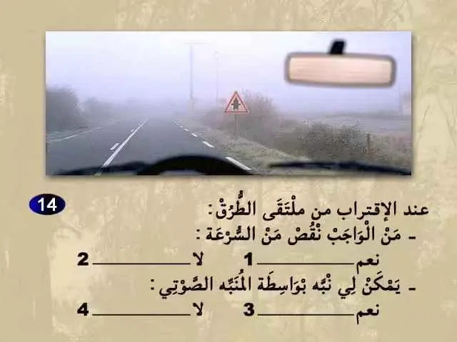
بيّن الجواب
الجواب الصحيح: 1 و 3
الإشارة كتعني انتباه خطر طريق ذات أولوية، يعني بعد 150 متر غادي نلقى ملتقى الطرق وعندي حق الأسبقية، خاصني ننقص السرعة والتنبيه بالمنبه الصوتي بسبب الضباب.
السؤال 15
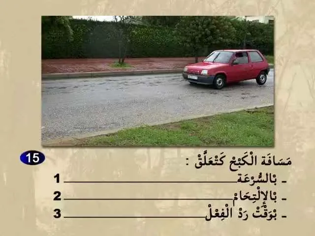
بيّن الجواب
الجواب الصحيح: 1 و 2
مسافة الكبح هي المسافة اللي نبدأ فيها الفرملة حتى نوقف، تتعلق بالسرعة وحالة الطريق والإطارات، ماعندهاش علاقة بوقت رد الفعل.
السؤال 16
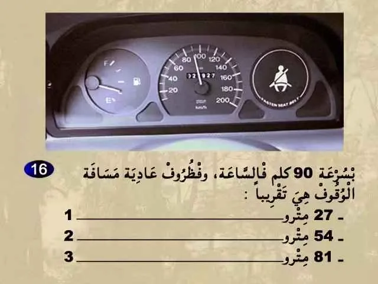
بيّن الجواب
الجواب الصحيح: 3
في طريق ناشفة وبسرعة 90 كلم في الساعة، مسافة الوقوف هي 9 ضرب 9 والنتيجة هي 81. إذن و انا غادي بدرعة 90 كلم/ساعة إذا إضطريت نوقف غادي نحتاج مسافة 81 متر تقريبا.
السؤال 17
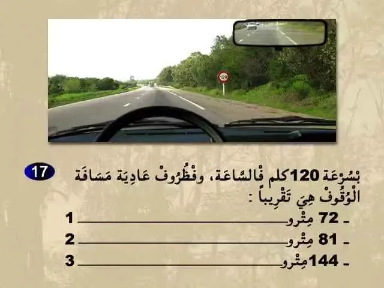
بيّن الجواب
الجواب الصحيح: 3
نسير بسرعة 90 كلم/ساعة، مسافة الوقوف هي 9 ضرب 9 = 81 متر. بنفس الطريقة نحسب مسافة الوقوف بسرعة 120 كلم/ساعة، 12 ضرب 12 = 144 متر.
السؤال 18
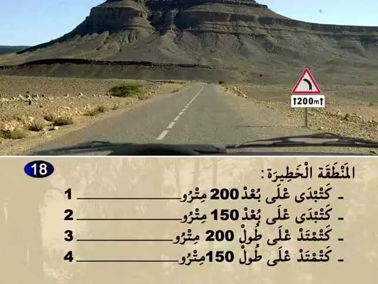
بيّن الجواب
الجواب الصحيح: 2 و 3
خطر المنعرج على اليسار بعد 150 متر وخطر المنعرج على طول 200 متر.
السؤال 19
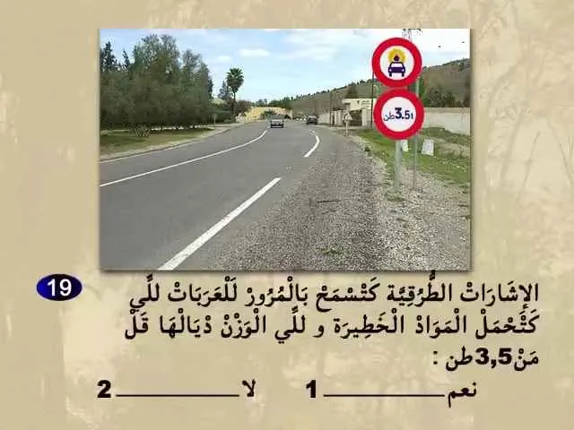
بيّن الجواب
الجواب الصحيح: 2
الإشارة الطّرقية تعني ممنوع مرور العربات اللي تحمل مواد قابلة للاشتعال أو الانفجار، والطريق ممنوع على السيارات اللي وزنها يتجاوز 3.5 طن.
السؤال 20
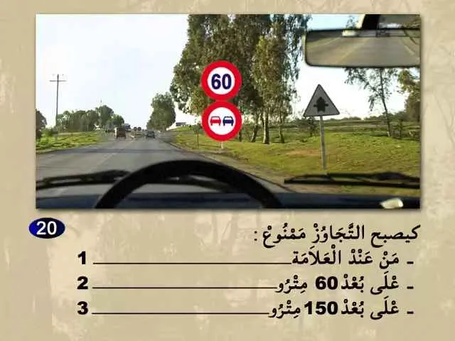
بيّن الجواب
الجواب الصحيح: 1
علامات المنع تطبق من عند العلامة، يعني التجاوز ممنوع من عند الإشارة الطّرقية.
السؤال 21
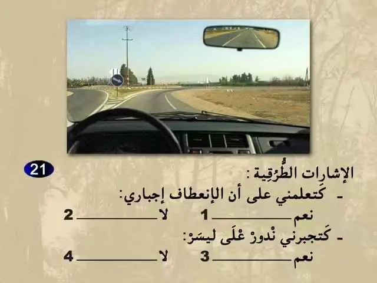
بيّن الجواب
الجواب الصحيح: 1 و 4
الإشارة كتعني إنعطاف إجباري لليمين، مايمكنش نستعمل المسلك على اليسار.
السؤال 22
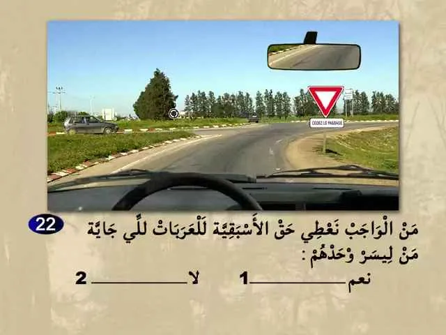
بيّن الجواب
الجواب الصحيح: 1
الإشارة كتعني ماعنديش حق الأسبقية، خاصني نعطي حق الأسبقية للعربات الجاية من الجهة اليمنى واليسرى. فحالة المدار نعطي حق الأسبقية للعربات الجاية من اليسار.
السؤال 23
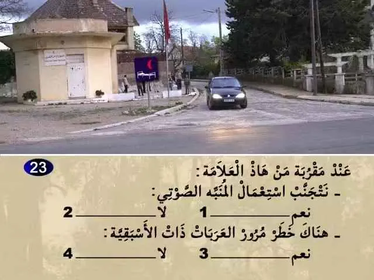
بيّن الجواب
الجواب الصحيح: 1 و 3
الإشارة كتعني وجود مستشفى، خاصني نتجنب استعمال المنبه الصوتي ونتوقع مرور عربات ذات الأسبقية للي هي سيارات الاسعاف.
السؤال 24
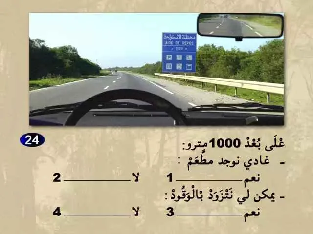
بيّن الجواب
الجواب الصحيح: 1 و 3
فطريق سيار، على بعد 1000 متر محطة الاستراحة فيها كلشي: مطعم، مسجد، مقهى، محطة وقود، مراحيض.
السؤال 25
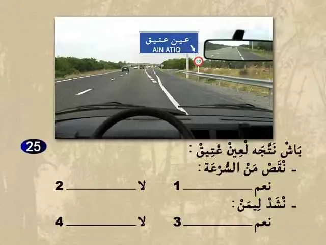
بيّن الجواب
الجواب الصحيح: 1 و 3
أستعمل مسلك التباطئ للخروج من الطريق السيار، ننقص السرعة ونستعمل المسلك على اليمين لعين عتيق.
السؤال 26
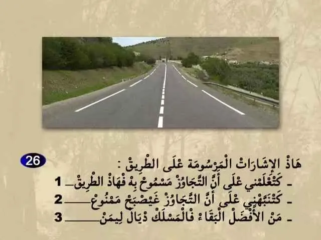
بيّن الجواب
الجواب الصحيح: 2 و 3
الخط المرسوم على الأرض ينبّهني أن التجاوز غادي يصبح ممنوع، من الأفضل نبقى في المسلك اليميني.
السؤال 27
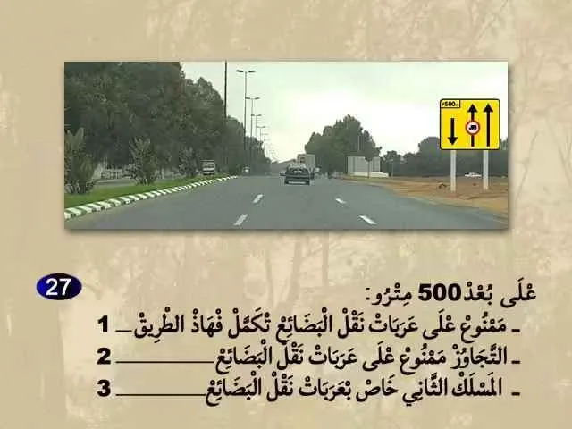
بيّن الجواب
الجواب الصحيح: 2
الإشارة الطّرقية مؤقتة (لونها أصفر)، على بعد 500 متر الطريق غادي تولي بمسلكين، والمسلك في الوسط ممنوع للشاحنات.
السؤال 28
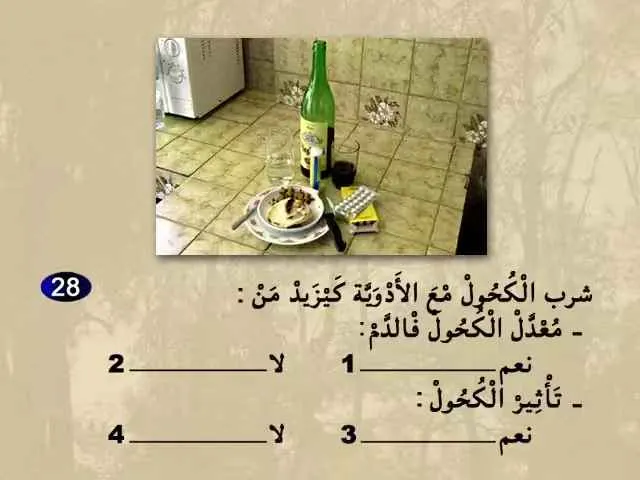
بيّن الجواب
الجواب الصحيح: 1 و 3
شرب الكحول مع الأدوية يزيد معدل الكحول في الدم أكثر.
السؤال 29
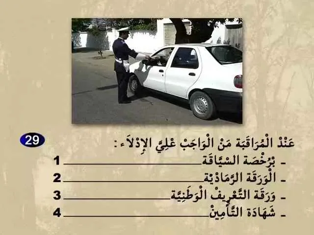
بيّن الجواب
الجواب الصحيح: 1 و 2 و 4
في المراقبة الطرقية، خاصني نوري رخصة السياقة، البطاقة الرمادية وشهادة التأمين.
السؤال 30
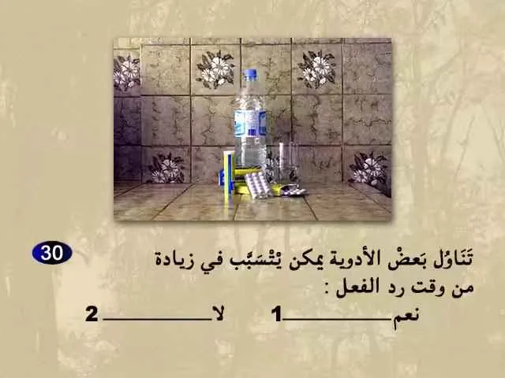
بيّن الجواب
الجواب الصحيح: 1
وقت رد الفعل في المتوسط ثانية، ويزداد مع تناول الأدوية، حالة سكر، التعب، قلة النوم وتناول المخدرات.
السؤال 31
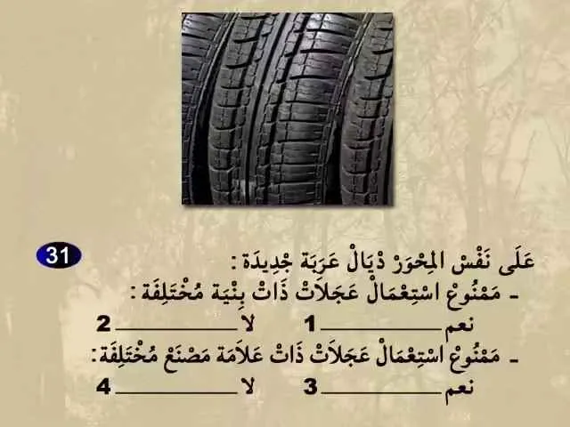
بيّن الجواب
الجواب الصحيح: 1 و 4
السيارة فيها محورين للعجلات، المحور الامامي و المحور الخلفي، في نفس المحور خاص العجلات تكون بنفس المقاس.
السؤال 32
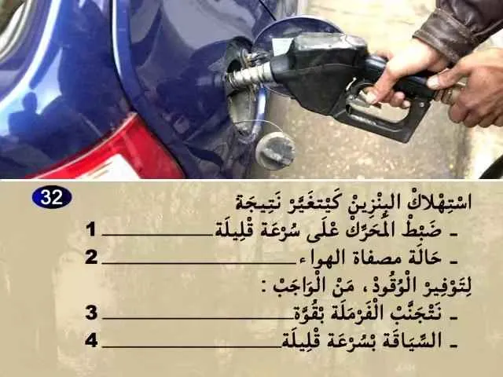
بيّن الجواب
الجواب الصحيح: 2 و 3
إستهلاك البنزين يتغير بحالة مصفاة الهواء، وتجنب استعمال الفرامل كيوفر الوقود.
السؤال 33
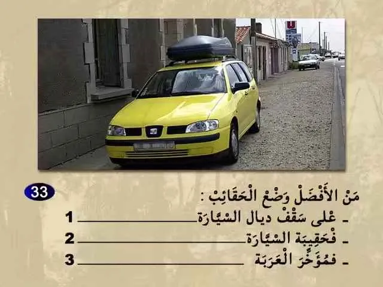
بيّن الجواب
الجواب الصحيح: 2
من الأفضل ندير الحقائب في حقيبة السيارة (الكوفر) لتجنب الخطر.
السؤال 34
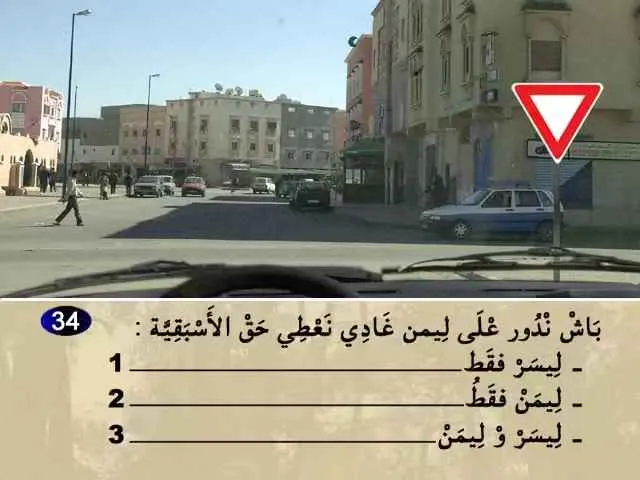
بيّن الجواب
الجواب الصحيح: 3
الإشارة كتعني ماعنديش حق الأسبقية، خاصني نعطي حق الأسبقية للعربات القادمة من الجهة اليمنى واليسرى.
السؤال 35
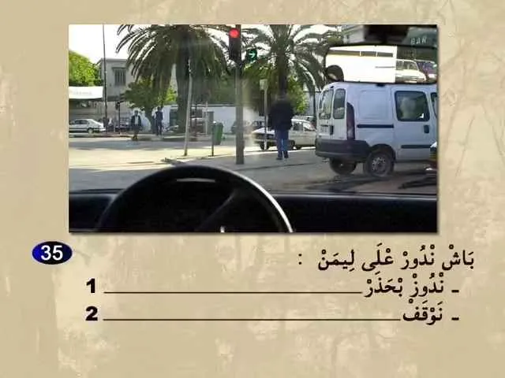
بيّن الجواب
الجواب الصحيح: 1
الإشارات الضوئية: الضوء الأحمر كيمنع المرور، السهم الأخضر كيسمح بلامرور لليمين.
السؤال 36
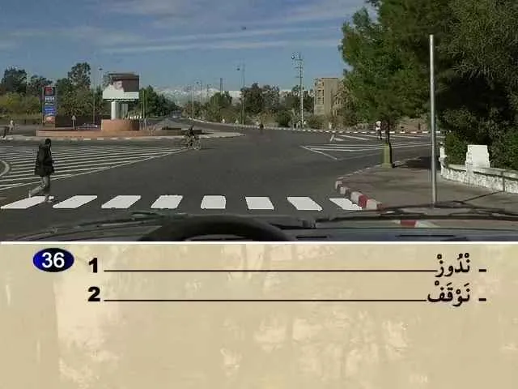
بيّن الجواب
الجواب الصحيح: 2
الراجل في ممر الراجلين عنده حق الأسبقية، خاصني نوقف ونخليه يدوز.
السؤال 37
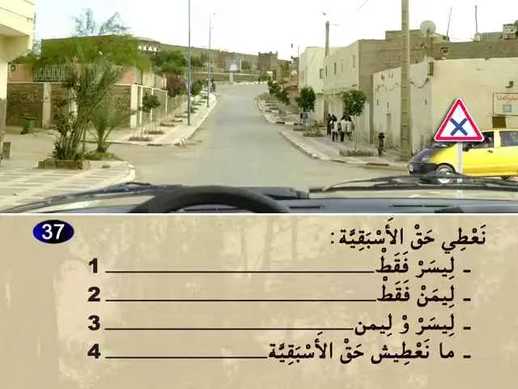
بيّن الجواب
الجواب الصحيح: 2
الإشارة كتعني خطر ملتقى الطرق والأسبقية للعربات الجاية من الجهة اليمنى.
السؤال 38
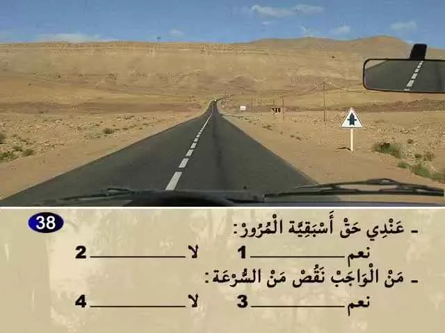
بيّن الجواب
الجواب الصحيح: 1 و 3
الإشارة كتعني حق أسبقية المرور في ملتقى الطرق بعد 150 متر، خاصني ننقص السرعة.
السؤال 39
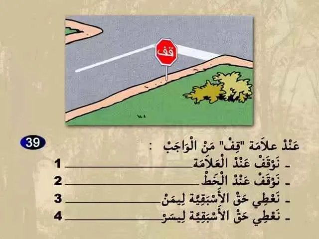
بيّن الجواب
الجواب الصحيح: 2 و 3 و 4
عند الإشارة قف، خاصني نوقف عند الخط المرسوم ونعطي حق الأسبقية للعربات الجاية من الجهتين.
السؤال 40
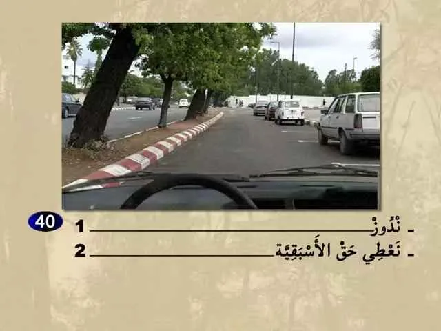
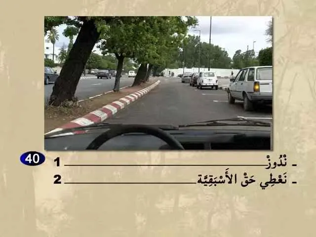
بيّن الجواب
الجواب الصحيح: 1
السيارة على اليمين كتستعمل إشارة لليسار باش تدخل للطريق، خاصها تنتظر حتى ندوز انا حيت هي كانت واقفة و يالاه غادي تتحرك.